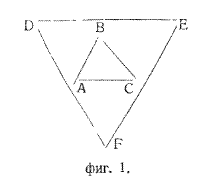
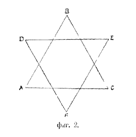

Беседа 1766 от 3877 · Беинса Дуно
Човешкото лице
Т.м.
Изпейте песните "Сила, живот и здраве" и "Аин фаси".
Упражнение за дишане: шест вдишвания, три задържания и шест издишвания. При вдишване и задържане на въздуха ръцете горе; при издишване ръцете се свалят долу.
Представете си, че в крака ви влезе един трън. Какво правите? Цяла нощ пъшкате, обръщате се на една, на друга страна, не можете да спите. Болката ви е толкова голяма, че ви кара да плачете. Най-после дойде някой ваш приятел, вземе игла и внимателно извади тръна. След това намаже мястото с дървено масло и го превърже. Веднага болката утихва и вие изпитвате радост, че се освободихте от тръна. Той отива на друга служба. Това е алегория, която може да се пренесе в психическия живот на човека. – Докога страда човек? – Докато е в училището и се учи. Щом свърши училището, страданията изчезват. Отношенията на учителите към ученика се изменят, стават приятелски. – Ангелът страда ли като човека? – Не страда. – Защо? – Защото е завършил своето развитие. Следователно, ако страдаш, ще знаеш, че много работи не разбираш и много има да учиш. Страданието е строгото лице на учителя, който пита ученика: Защо не знаеш? Защо не можеш? Защо си болен и беден? Бедността е неразрешена задача. Не питай защо страдаш, но учи се да не страдаш. Не питай защо грешиш, но учи се да не грешиш. Не питай защо не пееш вярно, но учи се да пееш вярно. Първо човек трябва да пее за себе си, после за другите. Най-добрата публика е самият той. Хората са като децата. Каквото правят, те имат предвид външния свят, поради което изпадат в противоречия и стълкновения.
Колкото и да се говори за страданията, колкото и да се изнася добрата страна на страданията, хората пак не искат да страдат. Много просто – стани камък. Щом си човек, ще страдаш. – Не искам да стана камък. – Тогава ще страдаш. Който иска да придобие знания, непременно ще страда. Камъкът не страда, но и знание няма. Човек страда и придобива знания. Кое е по-хубаво: да имаш страдание и знание или да нямаш страдание, но да нямаш и знание. Вие не се убедени още в тази истина. Има нещо неприятно в страданието, както и в работата, и в яденето. Неприятно е да работиш и да не оценят работата ти; неприятно е да ядеш и да не се наядеш; неприятно е да пиеш, без да задоволиш жаждата си; неприятно е да мислиш, без да разрешиш задачата си.
Сега, като изучавате човешкото лице, обръщайте внимание на очите и на разстоянието им едно от друго, както и на разстоянието им до устата. Колкото по-голямо е разстоянието от едното око до другото, толкова човек е по-голям консерватор, а организмът му по-издържлив. Ако разстоянието е по-малко, организмът е по-слаб. Колкото по-голямо е разстоянието от очите до устата, толкова по-активен е човек. Значи тази линия има отношение към волята. Чувствата скъсяват линиите, а мисълта ги удължава. Кръглите лица показват, че чувствата имат преобладаващо влияние над мисълта. В продълговатите лица преобладава мисълта.


Какво се иска от вас? – Да се учите да усилвате вярата си. – Какво представлява вярата? – Тя е завършен процес, резултат на дейността на разумни същества, които са живели някога на Земята и доброволно са я напуснали. Те са оставили вярата – своята работа, като наследство на човечеството. Като знаете това, не питайте защо трябва да вярвате и какво нещо е вярата. В закона на вярата всичко е точно определено, всичко е предвидено. Можеш да разсъждаваш върху вярата само когато я приложиш. – Не може ли без вяра? – Не може. На физическия свят вярата е основа, върху която се гради. Без вяра не може да градиш, не може да мислиш, не може да забогатееш, не може да работиш. Вярата е стимул в живота. Какво бихте направили без вяра? Има положителна и отрицателна вяра. Следователно не казвам да вярвате в това, което не съществува. Вярвайте в това, което съществува.
Ще ви дам следните прости действия:
2 + 2 = 4 2 х 2 = 4
2 - 2 = 0 2 : 2 = 1
Като съберете числата, получени като резултат на действията, получавате числото 9. Цялото число е 4041. Това число е щастливо. В него има две четворки. Четворката носи щастие за онзи, който я разбира. За онзи, който не я разбира, това число носи противоречие. Единицата е проблематично число. Девятката е щастливо число за онзи, който може да смята добре. Когато искаш да си създадеш приятели, ще прилагаш действието събиране. Ако искаш да подобриш условията, ще работиш с изваждането. Когато искаш да нагостиш приятелите си, ще приложиш умножението. Ако искаш да бъдеш справедлив, ще приложиш делението, ще дадеш на всеки, каквото му се пада. Значи справедливостта е в делението, радостта – в умножението, добрите условия в изваждането, приятелството – в събирането.
Казвате: Човек трябва да има воля, гръбнак, да издържа. – Трябва да знаеш как да употребиш този гръбнак. Знаеш ли колко прешлена има гръбнакът? Знаеш ли колко дупки, т.е. каналчета, има всеки прешлен? Знаеш ли кога трябва да употребяваш аритметичните действия в живота си? Кога ще изваждаш? – Когато имаш едно отрицателно чувство в сърцето си. Отрицателното чувство не излиза с любов. Ще го хванеш с щипки и ще го извадиш. Колкото повече любов даваш на лошия човек, толкова по-лош става той. Ако нахраниш вълка, той става по-лош. Ако нахраниш змията, и тя става по-лоша. Следователно, дойдеш ли до злото, не му давай условия да се развива, не го подхранвай. Ако подхранваш злото и му даваш условия да се развива, то ще погълне доброто и неговата сила. Тогава, ако искаш да проявиш доброто в себе си, ще видиш, че то няма сила да се прояви, неговите сокове са изчерпани.
И така, работете върху лицето си, докато сами се харесате. Оглеждайте се всяка сутрин, да видите какво ви липсва. Ще кажете, че лицето ви е много слабо. Лицето може да е пълничко, кръгло, и пак да не ви харесва. Очите ви може да са светли, ясни, и пак да не ви се харесват. Какво ви липсва? Има една подвижност на линиите, която прави лицето красиво. Ако тази подвижност липсва, лицето губи своята красота. Има една линия на лицето, която му придава красота. Тя мъчно се хваща. Даже най-добрият художник или фотограф не е в състояние да я схване. Щом видиш тази линия, ти се зарадваш; ако я изгубиш, наскърбяваш се. Тя е неуловима и неограничена. Тя е линията на реалността, линията на красотата.
Що е реалността? – Онова, което нито се ограничава, нито може да се улови. Реалността радва човека, дава му разположение и живот. Някога линията на красотата се явява в очите, някога в устата, някога на лицето и го прави особено подвижно и изразително. Понякога тя придава на лицето особена сериозност, като че очакваш онзи момент, когато в Природата се извършва важен процес, който си очаквал с години. Ти седиш напрегнат, в очакване да видиш онова, от което зависи твоето бъдеще. Схванеш ли тоя момент, лицето ти се озарява с нова светлина. Това е първият лъч, който прониква в съзнанието ти и разсейва мрака, в който си живял. Ти виждаш вече света в нова светлина, каквато никога не си могъл да си представиш.
Страшен е мракът и слепотата в човешкия живот! – Кога настава тоя мрак? Когато допуснеш греха в себе си. Тогава иде неразбирането, тогава иде и нещастието. Казваш: Животът няма смисъл. – Къде е светлината в живота ми? – В твоя мозък. В мозъка ти има толкова енергия, че ако я превърнеш на светлина, хиляди години ще си служиш с нея. Един човешки мозък може да храни света хиляди години наред. Ти забравяш това богатство и се чудиш какво да правиш.
Сега, като се оглеждаш всяка сутрин, поглеждай носа си и кажи: Хубав е моят нос, не е пораснал колкото трябва, още има да расте. Помилвай леко носа си и кажи: Бъди умен, добре мисли! Носът е свързан с разумни същества, които работят за развитието му. Този процес не е завършен още, затова и вие трябва да вземате участие в него. Не пипайте грубо носа си, не го теглете. Всяка сутрин го милвайте нежно, леко, защото от него зависи вашето щастие и благо. Той прави лицето красиво. Мисълта ти зависи от твоя нос. Колкото и да се пъчиш, ако нямаш нос, нищо не струваш. Който разбира значението на носа, радва се и го благославя. Погали носа си и кажи: Колко си хубав! Колко те обичам! Търсиш някакво богатство отвън, а забравяш, че всичкото ти богатство е в твоя нос. Няма по-добър приятел в света от човешкия нос. Той решава всички трудни въпроси. Помилвай го и му благодари. Той е станция на човешкия ум, а умът е министър на просветата. Ще дръннеш звънеца, т.е. ще погалиш носа си и ще го попиташ: Моля, мога ли да се срещна с господин министра? – Можеш. Ще влезеш вътре и ще се поклониш учтиво.
Като ученици от вас се иска добра обхода с носа. Щом станеш от сън, ще погалиш нежно носа си и ще му благодариш за работата, която върши. Ще гледаш никой да не те вижда какво правиш, защото няма да те разберат. Ако се секнеш, ще помислиш малко и ще кажеш на носа си: Мога ли да ти направя една услуга? След това ще вземеш кърпата и ще се осекнеш. Като правите така, ще видите какъв резултат ще имате. Станеш сутрин от сън мрачен, неразположен, като че светът се обърнал наопаки. Не се сърди, но погали леко носа си и кажи: Тежко ми е нещо, помогни ми. Няма да мине много време и неразположението ти ще изчезне. За колко дни искате да направите упражнението с носа, да го гладите нежно? Хайде за една седмица. Ще милвате леко носа си всяка сутрин и ще му благодарите. След свършване на упражнението милвайте носа си, когато сте неразположени, недоволни или когато някой урок не ви върви. Учите, но забравяте, разсейвате се. Хванете леко носа си и поискайте от него помощ, той веднага ще ви помогне.
Казвам: Радвайте се на благото, което Бог ви е дал – вашето лице. Отдавайте му нужната почит и уважение. Душата, умът, сърцето се изявяват чрез лицето. Вътрешният живот на човека се изразява чрез лицето. Като благодариш за лицето, благодари специално и за носа – главния съветник на човека. Каквото ти каже носът, слушай го.
– Само светлият път на Мъдростта води към Истината.
– В Истината е скрит животът.
20. Лекция от Учителя, държана на 26-ти февруари 1932 г., в София – Изгрев.